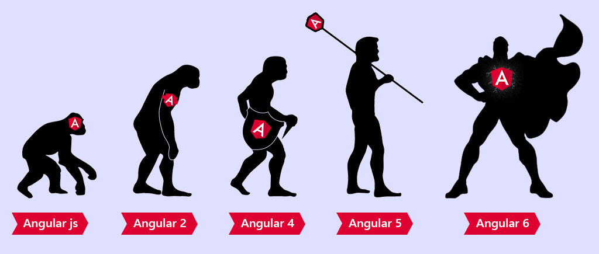
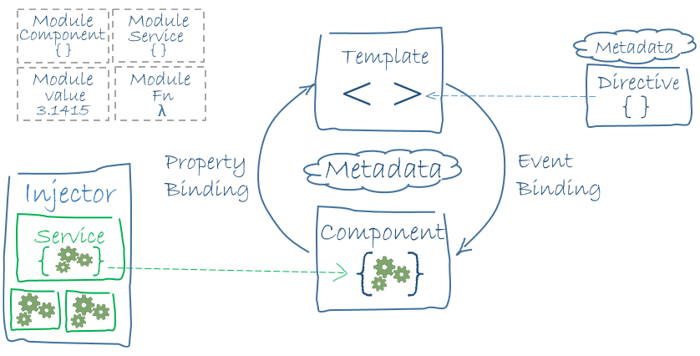

Angular
What is Angular?
Angular is a JavaScript front-end framework.
Versions of Angular
Angular.JS
- is the first version of the angular framework
- it was initially released in Oct 2010
- it is based on javascript
Angular 2
is a complete rewrite
it is written entirely in TypeScript
is mobile oriented
it provides more choice for languages
Angular 7
the current latest stable version
was released on October 18, 2018.
Architecture
component-based architecture
Architecture
- Modules
- Components
- Templates
- Metadata
- Data Binding
- Directive
- Services
- Dependency Injection
TypeScript

JavaScript vs TypeScript
Performance
Angular is fast and is well optimized